Reproducing Chapter 5 of Bayesian Methods for Hackers in R + Stan
We can start by visualizing some priors:
library(tidyverse)
library(tidybayes)
library(posterior)
library(patchwork)
theme_set(theme_tidybayes())
tribble(
~var, ~mu, ~sd,
"historical total prices", 35000, 7500,
"snowblower price guess", 3000, 500,
"trip price guess", 12000, 3000
) %>%
ggplot() +
stat_dist_halfeye(
aes(dist = distributional::dist_normal(mu = mu, sigma = sd)),
normalize = "panels",
orientation = "horizontal"
) +
facet_wrap(~var, ncol = 1) +
labs(
y = NULL,
x = NULL
)
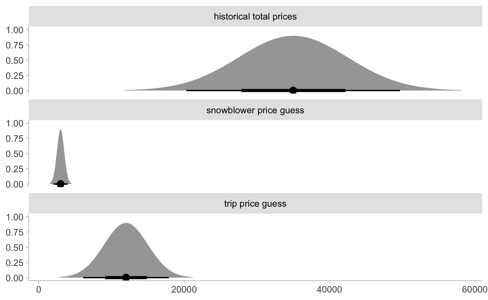
There’s no data block here. We’re simply playing with priors which is kind of cool.
mod <- cmdstanr::cmdstan_model("models/ch5-mod1.stan")
mod$print()
parameters {
real true_price;
real prize_1;
real prize_2;
}
transformed parameters {
real price_estimate;
price_estimate = prize_1 + prize_2;
}
model {
// priors
true_price ~ normal(35000, 7500);
prize_1 ~ normal(3000, 500);
prize_2 ~ normal(12000, 3000);
// updated price using priors of individual prizes
true_price ~ normal(price_estimate, 3000);
}fit <- mod$sample(
seed = 123,
chains = 4,
parallel_chains = 2,
refresh = 1000,
iter_sampling = 3000
)
Running MCMC with 4 chains, at most 2 in parallel...
Chain 1 Iteration: 1 / 4000 [ 0%] (Warmup)
Chain 1 Iteration: 1000 / 4000 [ 25%] (Warmup)
Chain 1 Iteration: 1001 / 4000 [ 25%] (Sampling)
Chain 1 Iteration: 2000 / 4000 [ 50%] (Sampling)
Chain 1 Iteration: 3000 / 4000 [ 75%] (Sampling)
Chain 1 Iteration: 4000 / 4000 [100%] (Sampling)
Chain 2 Iteration: 1 / 4000 [ 0%] (Warmup)
Chain 2 Iteration: 1000 / 4000 [ 25%] (Warmup)
Chain 2 Iteration: 1001 / 4000 [ 25%] (Sampling)
Chain 2 Iteration: 2000 / 4000 [ 50%] (Sampling)
Chain 2 Iteration: 3000 / 4000 [ 75%] (Sampling)
Chain 2 Iteration: 4000 / 4000 [100%] (Sampling)
Chain 1 finished in 0.1 seconds.
Chain 2 finished in 0.1 seconds.
Chain 3 Iteration: 1 / 4000 [ 0%] (Warmup)
Chain 3 Iteration: 1000 / 4000 [ 25%] (Warmup)
Chain 3 Iteration: 1001 / 4000 [ 25%] (Sampling)
Chain 3 Iteration: 2000 / 4000 [ 50%] (Sampling)
Chain 3 Iteration: 3000 / 4000 [ 75%] (Sampling)
Chain 3 Iteration: 4000 / 4000 [100%] (Sampling)
Chain 4 Iteration: 1 / 4000 [ 0%] (Warmup)
Chain 4 Iteration: 1000 / 4000 [ 25%] (Warmup)
Chain 4 Iteration: 1001 / 4000 [ 25%] (Sampling)
Chain 4 Iteration: 2000 / 4000 [ 50%] (Sampling)
Chain 4 Iteration: 3000 / 4000 [ 75%] (Sampling)
Chain 4 Iteration: 4000 / 4000 [100%] (Sampling)
Chain 3 finished in 0.1 seconds.
Chain 4 finished in 0.1 seconds.
All 4 chains finished successfully.
Mean chain execution time: 0.1 seconds.
Total execution time: 0.5 seconds.Now to visualize the total_price estimate:
# https://mpopov.com/blog/2020/09/07/pivoting-posteriors/
tidy_draws.CmdStanMCMC <- function(model, ...) {
return(as_draws_df(model$draws()))
}
Now visualizing the prior information versus the posterior price estimate:
priorp <- ggplot() +
stat_dist_halfeye(
aes(dist = distributional::dist_normal(mu = 35000, sigma = 7500)),
.width = 0.25,
orientation = "horizontal"
) +
xlim(5000, 40000) +
labs(
title = "Prior distribution of suite price",
y = NULL,
x = NULL
)
postp <- fit %>%
gather_draws(true_price) %>%
ggplot() +
stat_histinterval(aes(x = .value), .width = 0.25) +
xlim(5000, 40000) +
labs(
title = "Posterior of the true price estimate",
y = NULL,
x = NULL
)
priorp / postp
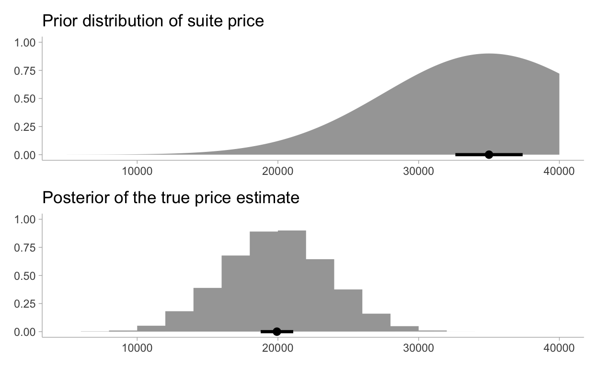
I prefer the above method of just writing the utility function in Stan and using it to estimate the expected loss. However, there’s a limitation for the optimization process this way. It’s only as granular as the inputs we send to Stan. We could increase the resolution of guesses here and get something more accurate or just keep as is and select the best guess in our set of 70 guesses.
You can use the optim function to get a better choice using optimization by just using the posterior within the R environment. Something more like this example which uses the posterior_predict function from the brms package. This is also better for scale once we start having more dimensions.
Define the loss function using the true_price posterior distribution
post_df <- gather_draws(fit, true_price)
dat <- crossing(guesses, risks) %>%
mutate(nest(post_df)) %>%
mutate(
loss = pmap_dbl(
list(guesses, data, risks),
~ showdown_loss(..1, ..2, ..3)
)
) %>%
select(guesses, risks, loss)
p <- dat %>%
ggplot(aes(x = guesses, y = loss, color = ordered(risks))) +
geom_line() +
xlim(5000, 30000) +
scale_color_viridis_d(
name = "Risk parameter",
labels = risks
) +
labs(
title = "Expected loss of different guesses",
subtitle = "various risk-levels of overestimating",
x = "price bid",
y = "expected loss"
)
p
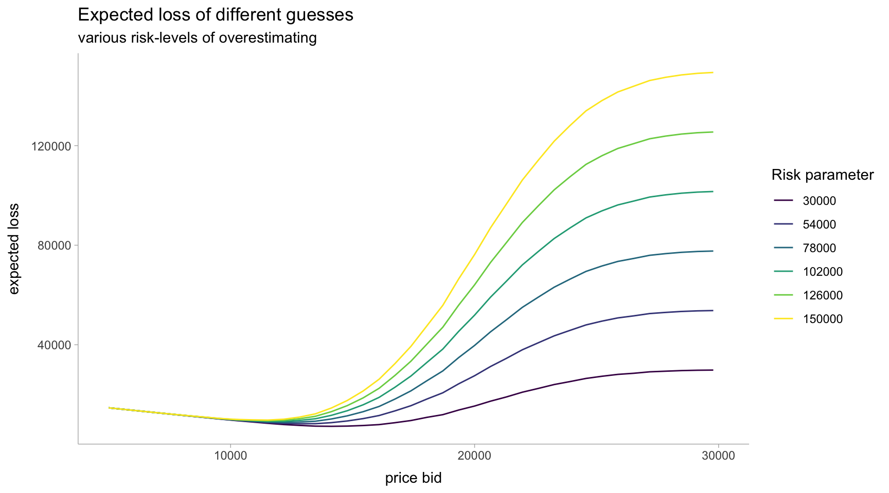
oppnts <- tibble(risks) %>%
mutate(nest(post_df)) %>%
mutate(
opt = map2(data, risks, ~ optim(
5000,
fn = function(guess) showdown_loss(guess, .x, .y)
))
) %>%
mutate(
opt_tidy = map(opt, broom::tidy),
opt_glance = map(opt, broom::glance)
) %>%
unnest(opt_tidy, opt_glance) %>%
select(risks, starts_with("value")) %>%
rename(guesses = value, loss = value1)
p + geom_vline(
data = oppnts,
aes(xintercept = guesses, color = ordered(risks)),
linetype = "dashed"
) +
scale_color_viridis_d(
name = "Bayes action at risk:",
labels = risks
) +
labs(
title = "Expected loss & Bayes actions of different guesses",
subtitle = "various risk-levels of overestimating",
x = "price bid",
y = "expected loss"
)
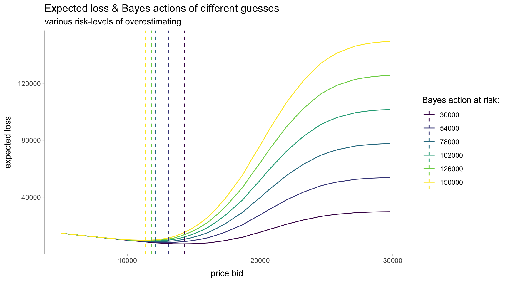
pred <- seq(-0.04, 0.12, length.out = 75)
pred_df <- tibble(pred) %>%
mutate(
`true_0.05` = stock_loss(0.05, pred),
`true_-0.02` = stock_loss(-0.02, pred)
) %>%
pivot_longer(-pred, names_to = "loss", names_prefix = "true_")
pred_df %>%
ggplot(aes(x = pred, y = value, color = loss)) +
geom_line() +
xlim(-0.04, .12) +
ylim(0, 0.25) +
geom_vline(aes(xintercept = 0.0), linetype = "dashed") +
labs(
title = "Stock returns loss if true value = 0.05, -0.02",
y = "loss",
x = "prediction"
) +
scale_color_viridis_d(name = "If true value = ")
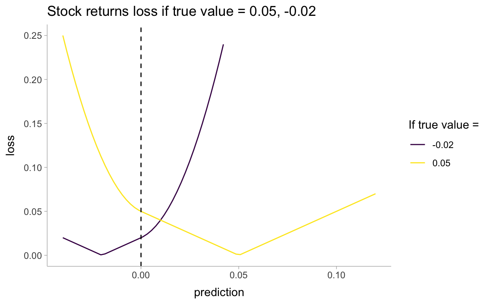
We will perform a regression on a trading signal that we believe predicts future returns well. Our dataset is artificial, as most financial data is not even close to linear. Below, we plot the data along with the least-squares line.
## Code to create artificial data
set.seed(123)
N <- 100
X <- 0.025 * rnorm(N)
Y <- 0.5 * X + 0.01 * rnorm(N)
artdat <- tibble(X, Y)
ls_coef_ <- cov(X, Y) / var(X)
ls_intercept <- mean(Y) - ls_coef_ * mean(X)
artdat %>%
ggplot(aes(X, Y)) +
geom_point() +
geom_smooth(method = "lm") +
labs(
title = "Empirical returns vs trading signal",
x = "trading signal",
y = "returns"
)
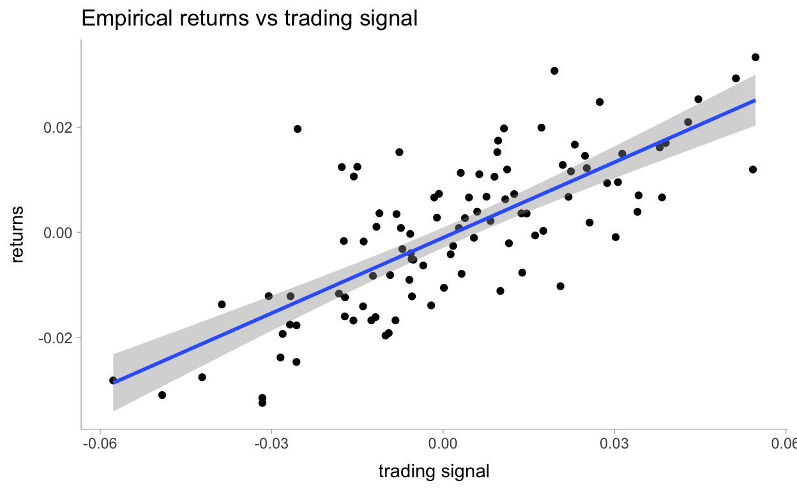
dat_list <- compose_data(artdat)
trading_signals <- seq(min(X), max(X), length.out = 50)
dat_list[["trading_signals"]] <- trading_signals
mod2 <- cmdstanr::cmdstan_model("models/ch5-mod2.stan")
mod2$print()
data {
int<lower=0> n;
vector[n] X;
vector[n] Y;
vector[50] trading_signals;
}
parameters {
real beta;
real alpha;
real<lower=0> std;
}
model {
alpha ~ normal(0, 100);
beta ~ normal(0, 100);
std ~ uniform(0, 100);
Y ~ normal(alpha + beta * X, std);
}
generated quantities {
vector[50] outcomes;
for (i in 1:50)
outcomes[i] = normal_rng(alpha + beta * trading_signals[i], std);
}fit2 <- mod2$sample(
data = dat_list,
seed = 123,
chains = 4,
parallel_chains = 4,
refresh = 1000,
iter_sampling = 3000
)
Running MCMC with 4 parallel chains...
Chain 1 Iteration: 1 / 4000 [ 0%] (Warmup)
Chain 2 Iteration: 1 / 4000 [ 0%] (Warmup)
Chain 3 Iteration: 1 / 4000 [ 0%] (Warmup)
Chain 4 Iteration: 1 / 4000 [ 0%] (Warmup)
Chain 1 Iteration: 1000 / 4000 [ 25%] (Warmup)
Chain 1 Iteration: 1001 / 4000 [ 25%] (Sampling)
Chain 2 Iteration: 1000 / 4000 [ 25%] (Warmup)
Chain 2 Iteration: 1001 / 4000 [ 25%] (Sampling)
Chain 3 Iteration: 1000 / 4000 [ 25%] (Warmup)
Chain 3 Iteration: 1001 / 4000 [ 25%] (Sampling)
Chain 4 Iteration: 1000 / 4000 [ 25%] (Warmup)
Chain 4 Iteration: 1001 / 4000 [ 25%] (Sampling)
Chain 1 Iteration: 2000 / 4000 [ 50%] (Sampling)
Chain 2 Iteration: 2000 / 4000 [ 50%] (Sampling)
Chain 3 Iteration: 2000 / 4000 [ 50%] (Sampling)
Chain 4 Iteration: 2000 / 4000 [ 50%] (Sampling)
Chain 1 Iteration: 3000 / 4000 [ 75%] (Sampling)
Chain 2 Iteration: 3000 / 4000 [ 75%] (Sampling)
Chain 3 Iteration: 3000 / 4000 [ 75%] (Sampling)
Chain 4 Iteration: 3000 / 4000 [ 75%] (Sampling)
Chain 1 Iteration: 4000 / 4000 [100%] (Sampling)
Chain 2 Iteration: 4000 / 4000 [100%] (Sampling)
Chain 4 Iteration: 4000 / 4000 [100%] (Sampling)
Chain 1 finished in 0.7 seconds.
Chain 2 finished in 0.7 seconds.
Chain 4 finished in 0.7 seconds.
Chain 3 Iteration: 4000 / 4000 [100%] (Sampling)
Chain 3 finished in 0.7 seconds.
All 4 chains finished successfully.
Mean chain execution time: 0.7 seconds.
Total execution time: 0.8 seconds.fit2
variable mean median sd mad q5 q95 rhat ess_bulk
lp__ 408.34 408.67 1.23 1.03 405.89 409.68 1.00 4354
beta 0.48 0.48 0.04 0.04 0.41 0.55 1.00 6048
alpha 0.00 0.00 0.00 0.00 0.00 0.00 1.00 15685
std 0.01 0.01 0.00 0.00 0.01 0.01 1.00 6125
outcomes[1] -0.03 -0.03 0.01 0.01 -0.05 -0.01 1.00 11571
outcomes[2] -0.03 -0.03 0.01 0.01 -0.04 -0.01 1.00 11097
outcomes[3] -0.03 -0.03 0.01 0.01 -0.04 -0.01 1.00 11161
outcomes[4] -0.03 -0.03 0.01 0.01 -0.04 -0.01 1.00 11186
outcomes[5] -0.02 -0.02 0.01 0.01 -0.04 -0.01 1.00 11457
outcomes[6] -0.02 -0.02 0.01 0.01 -0.04 -0.01 1.00 11457
ess_tail
5737
5720
9136
5406
11642
11396
11199
11520
11194
11554
# showing 10 of 54 rows (change via 'max_rows' argument)Visualizing the marginal distributions:
tidy_post <- gather_draws(fit2, alpha, beta, std)
tidy_post %>%
ggplot(aes(x = .value)) +
stat_histinterval(normalize = "panels", show_interval = FALSE) +
facet_wrap(~.variable, ncol = 1, scales = "free") +
labs(
title = "Marginal Distributions",
y = NULL,
x = NULL
)
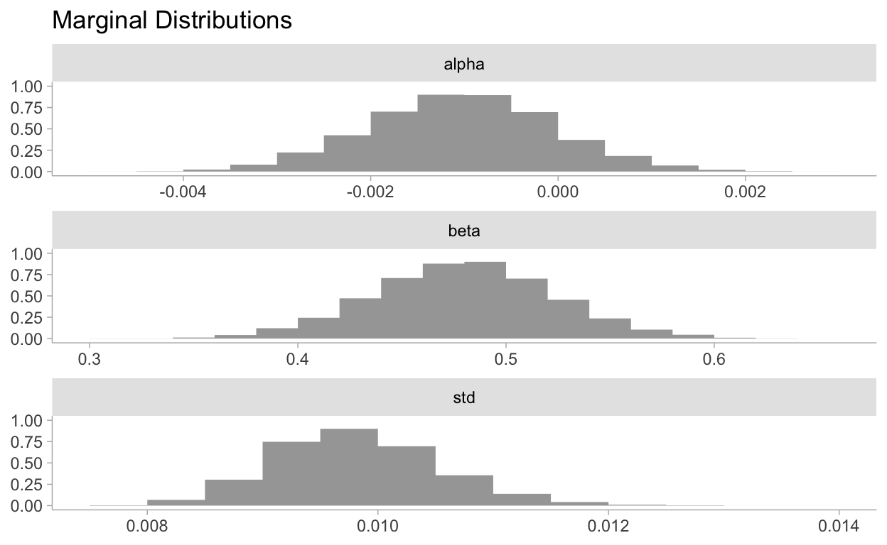
Now for incorporating the loss function into our predictions:
trading_signals <- seq(min(X), max(X), length.out = 50)
dat_list[["trading_signals"]] <- trading_signals
mod2_1 <- cmdstanr::cmdstan_model("models/ch5-mod2-wfunc.stan")
mod2_1$print()
functions {
int sign(real x) {
return x < 0 ? -1 : 1;
}
real stock_loss(real true_return, real yhat) {
real alpha = 100;
if (true_return * yhat < 0)
return(alpha * yhat^2 - sign(true_return) * yhat + fabs(true_return));
else
return(fabs(true_return - yhat));
}
}
data {
int<lower=0> n;
vector[n] X;
vector[n] Y;
vector[50] trading_signals;
}
parameters {
real beta;
real alpha;
real<lower=0> std;
}
model {
alpha ~ normal(0, 100);
beta ~ normal(0, 100);
std ~ uniform(0, 100);
Y ~ normal(alpha + beta * X, std);
}
generated quantities {
vector[50] outcomes;
vector[50] util;
for (i in 1:50){
outcomes[i] = normal_rng(alpha + beta * trading_signals[i], std);
util[i] = stock_loss(trading_signals[i], outcomes[i]);
}
}fit3 <- mod2_1$sample(
data = dat_list,
seed = 123,
chains = 4,
parallel_chains = 4,
refresh = 1000,
iter_sampling = 3000
)
Running MCMC with 4 parallel chains...
Chain 1 Iteration: 1 / 4000 [ 0%] (Warmup)
Chain 2 Iteration: 1 / 4000 [ 0%] (Warmup)
Chain 3 Iteration: 1 / 4000 [ 0%] (Warmup)
Chain 4 Iteration: 1 / 4000 [ 0%] (Warmup)
Chain 1 Iteration: 1000 / 4000 [ 25%] (Warmup)
Chain 1 Iteration: 1001 / 4000 [ 25%] (Sampling)
Chain 2 Iteration: 1000 / 4000 [ 25%] (Warmup)
Chain 2 Iteration: 1001 / 4000 [ 25%] (Sampling)
Chain 3 Iteration: 1000 / 4000 [ 25%] (Warmup)
Chain 3 Iteration: 1001 / 4000 [ 25%] (Sampling)
Chain 4 Iteration: 1000 / 4000 [ 25%] (Warmup)
Chain 4 Iteration: 1001 / 4000 [ 25%] (Sampling)
Chain 1 Iteration: 2000 / 4000 [ 50%] (Sampling)
Chain 2 Iteration: 2000 / 4000 [ 50%] (Sampling)
Chain 3 Iteration: 2000 / 4000 [ 50%] (Sampling)
Chain 4 Iteration: 2000 / 4000 [ 50%] (Sampling)
Chain 1 Iteration: 3000 / 4000 [ 75%] (Sampling)
Chain 2 Iteration: 3000 / 4000 [ 75%] (Sampling)
Chain 3 Iteration: 3000 / 4000 [ 75%] (Sampling)
Chain 4 Iteration: 3000 / 4000 [ 75%] (Sampling)
Chain 1 Iteration: 4000 / 4000 [100%] (Sampling)
Chain 1 finished in 0.8 seconds.
Chain 2 Iteration: 4000 / 4000 [100%] (Sampling)
Chain 3 Iteration: 4000 / 4000 [100%] (Sampling)
Chain 4 Iteration: 4000 / 4000 [100%] (Sampling)
Chain 2 finished in 0.9 seconds.
Chain 3 finished in 0.9 seconds.
Chain 4 finished in 0.9 seconds.
All 4 chains finished successfully.
Mean chain execution time: 0.9 seconds.
Total execution time: 1.0 seconds.baction <- fit3 %>%
gather_draws(util[i])
tibble(trading_signals) %>%
rowid_to_column(var = "i") %>%
right_join(baction) %>%
ggplot(aes(x = trading_signals)) +
stat_lineribbon(aes(y = .value), .width = c(.99, .95, .8, .5), color = "#08519C") +
scale_fill_brewer()
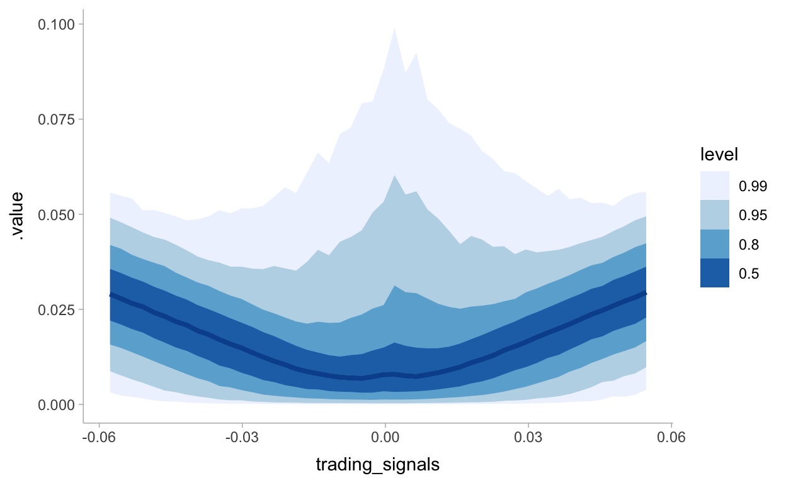
We’re able to see the issue with predictions close to zero from the chart above. Given there are many returns that could be positive or negative in this range we see a spike in potential risk or loss. In this case our optimization should instead predict 0 to take no position. This quote from the book explains this all well:
What is interesting about the above graph is that when the signal is near 0, and many of the possible returns outcomes are possibly both positive and negative, our best (with respect to our loss) prediction is to predict close to 0, hence take on no position. Only when we are very confident do we enter into a position. I call this style of model a sparse prediction, where we feel uncomfortable with our uncertainty so choose not to act. (Compare with the least-squares prediction which will rarely, if ever, predict zero).
I think the only way we can optimize continuous decisions is to keep the utility/loss function all in the R session. I want to include it in Stan because it kind of wraps it all up nicely but I’m not sure how to minimize/maximize the loss functions here. In the Stan manual it says for \(k\) discrete actions:
It only remains to make the decision k with highest expected utility, which will correspond to the choice with the highest posterior mean for util[k]. This can be read off of the mean column of the Stan’s summary statistics or accessed programmatically through Stan’s interfaces.
Then the following regarding continuous decisions:
In these cases, the continuous choice can be coded as data in the Stan program. Then the expected utilities may be calculated. In other words, Stan can be used as a function from a choice to expected utilities. Then an external optimizer can call that function.
ypred <- fit2 %>%
gather_draws(outcomes[i]) %>%
nest()
bayesact <- ypred %>%
mutate(
opt = map(data, ~ optim(
0,
fn = function(yhat) stock_loss(.x$.value, yhat, alpha = 500) %>% mean()
))
) %>%
select(-data) %>%
mutate(
opt_tidy = map(opt, broom::tidy),
opt_glance = map(opt, broom::glance)
) %>%
unnest(opt_tidy, opt_glance) %>%
rename(true_return = value, loss = value1) %>%
select(i, true_return, loss) %>%
ungroup()
Let’s visualize the predictions now:
ols <- tibble(trading_signals) %>%
rowid_to_column(var = "i") %>%
mutate(pred = ls_coef_ * trading_signals + ls_intercept)
bayesact %>%
left_join(ols) %>%
ggplot(aes(x = trading_signals)) +
geom_line(aes(y = true_return, color = "Bayes action")) +
geom_line(aes(y = pred, color = "Least-squares")) +
geom_hline(aes(yintercept = 0), linetype = "dashed") +
labs(
title = "Least-squares prediction vs. Bayes action prediction",
x = "trading signal",
y = "prediction"
) +
scale_color_viridis_d(name = NULL)
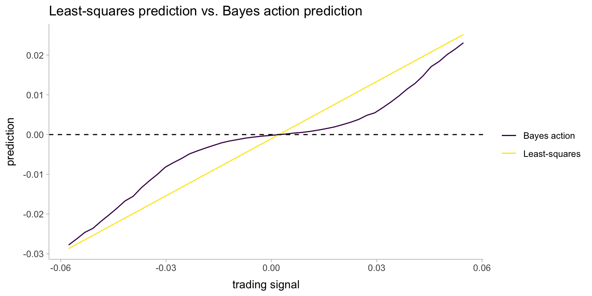
library(ggforce)
sky3 <- read_csv("data/Train_Skies/Training_Sky3.csv")
size_multiplier <- 25
sky3prep <- sky3 %>%
mutate(
d = sqrt(e1^2 + e2^2),
a = (1.0 / (1 - d)) * size_multiplier,
b = (1.0 / (1 + d)) * size_multiplier,
theta = atan2(e2, e1) * 0.5
)
p2 <- sky3prep %>%
ggplot() +
geom_ellipse(
aes(x0 = x, y0 = y, a = a, b = b, angle = theta),
alpha = 0.4,
fill = 'cyan4',
colour = 'cyan4'
)
p2
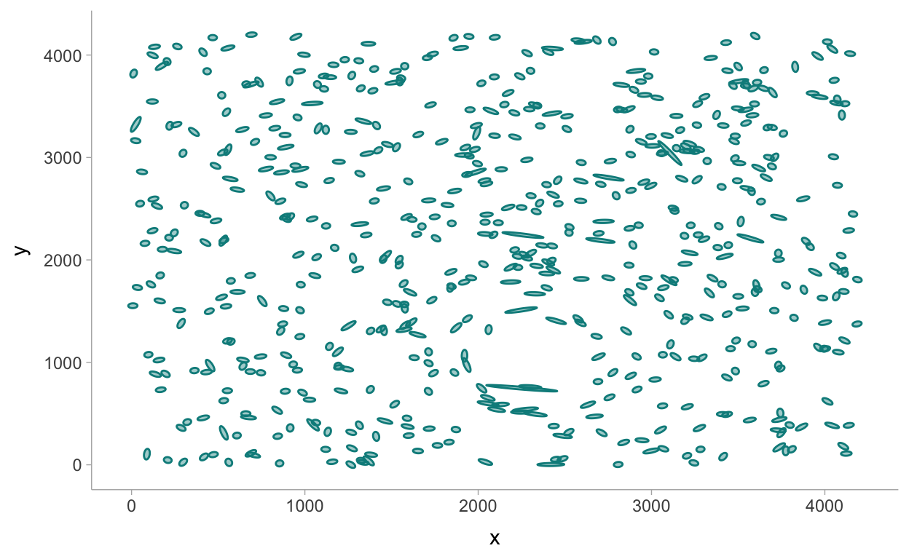
Thanks to some help from the Stan community: https://discourse.mc-stan.org/t/help-with-vectorizing-stan-program/19957
mod3 <- cmdstanr::cmdstan_model("models/ch5-mod3.stan")
mod3$print()
functions {
real f_distance(vector gxy_pos, vector halo_pos, real c) {
return fmax(distance(gxy_pos, halo_pos), c);
}
vector tangential_distance(vector glxy_position, vector halo_position) {
vector[2] delta = glxy_position - halo_position;
real t = (2 * atan(delta[2] / delta[1]));
return to_vector({-cos(t), -sin(t)});
}
}
data {
int<lower=0> n;
matrix[2, n] cart_pos; // x,y coordinates of galaxy position
matrix[2, n] ellip_pos; // a measure of ellipticity
}
parameters {
real<lower=40.0,upper=180.0> exp_mass_large;
vector<lower=0,upper=4200.0>[2] halo_position;
}
transformed parameters {
real mass_large = log(exp_mass_large); // one large halo
}
model {
vector[2] mu;
for (i in 1:n) {
mu = mass_large / f_distance(cart_pos[:, i], halo_position, 240.0) *
tangential_distance(cart_pos[:, i], halo_position);
ellip_pos[, i] ~ normal(mu, 0.05); // x-y coordinates
}
}# sample with MCMC
fit4 <- mod3$sample(
data = dat_list2,
seed = 123,
chains = 4,
parallel_chains = 4,
refresh = 1000,
iter_warmup = 1000,
iter_sampling = 3000
)
Running MCMC with 4 parallel chains...
Chain 3 Iteration: 1 / 4000 [ 0%] (Warmup)
Chain 4 Iteration: 1 / 4000 [ 0%] (Warmup)
Chain 1 Iteration: 1 / 4000 [ 0%] (Warmup)
Chain 2 Iteration: 1 / 4000 [ 0%] (Warmup)
Chain 3 Iteration: 1000 / 4000 [ 25%] (Warmup)
Chain 3 Iteration: 1001 / 4000 [ 25%] (Sampling)
Chain 1 Iteration: 1000 / 4000 [ 25%] (Warmup)
Chain 1 Iteration: 1001 / 4000 [ 25%] (Sampling)
Chain 2 Iteration: 1000 / 4000 [ 25%] (Warmup)
Chain 2 Iteration: 1001 / 4000 [ 25%] (Sampling)
Chain 3 Iteration: 2000 / 4000 [ 50%] (Sampling)
Chain 1 Iteration: 2000 / 4000 [ 50%] (Sampling)
Chain 2 Iteration: 2000 / 4000 [ 50%] (Sampling)
Chain 4 Iteration: 1000 / 4000 [ 25%] (Warmup)
Chain 4 Iteration: 1001 / 4000 [ 25%] (Sampling)
Chain 1 Iteration: 3000 / 4000 [ 75%] (Sampling)
Chain 3 Iteration: 3000 / 4000 [ 75%] (Sampling)
Chain 2 Iteration: 3000 / 4000 [ 75%] (Sampling)
Chain 4 Iteration: 2000 / 4000 [ 50%] (Sampling)
Chain 1 Iteration: 4000 / 4000 [100%] (Sampling)
Chain 1 finished in 52.4 seconds.
Chain 2 Iteration: 4000 / 4000 [100%] (Sampling)
Chain 2 finished in 53.1 seconds.
Chain 3 Iteration: 4000 / 4000 [100%] (Sampling)
Chain 3 finished in 53.3 seconds.
Chain 4 Iteration: 3000 / 4000 [ 75%] (Sampling)
Chain 4 Iteration: 4000 / 4000 [100%] (Sampling)
Chain 4 finished in 59.2 seconds.
All 4 chains finished successfully.
Mean chain execution time: 54.5 seconds.
Total execution time: 59.8 seconds.fit4$summary()
# A tibble: 5 x 10
variable mean median sd mad q5 q95 rhat
<chr> <dbl> <dbl> <dbl> <dbl> <dbl> <dbl> <dbl>
1 lp__ -1.18e4 -1.18e4 1.33 1.19 -1.18e4 -1.18e4 1.00
2 exp_mas… 1.73e2 1.75e2 7.13 5.31 1.58e2 1.80e2 1.00
3 halo_po… 2.33e3 2.34e3 32.7 33.0 2.28e3 2.39e3 1.00
4 halo_po… 1.19e3 1.19e3 56.3 48.7 1.08e3 1.26e3 1.00
5 mass_la… 5.15e0 5.16e0 0.0431 0.0302 5.06e0 5.19e0 1.00
# … with 2 more variables: ess_bulk <dbl>, ess_tail <dbl>Visualizing the halo location:
halo_post <- fit4 %>%
spread_draws(halo_position[coord]) %>%
pivot_wider(names_from = coord, values_from = halo_position) %>%
rename(x = `1`, y = `2`)
true_loc <- read_csv("data/Training_halos.csv") %>%
filter(SkyId == "Sky3") %>%
rename(x = halo_x1, y = halo_y1)
p2 +
geom_point(data = halo_post, aes(x = x, y = y), alpha = 0.015, color = "black") +
geom_point(data = true_loc, aes(x = x, y = y), color = "orange")
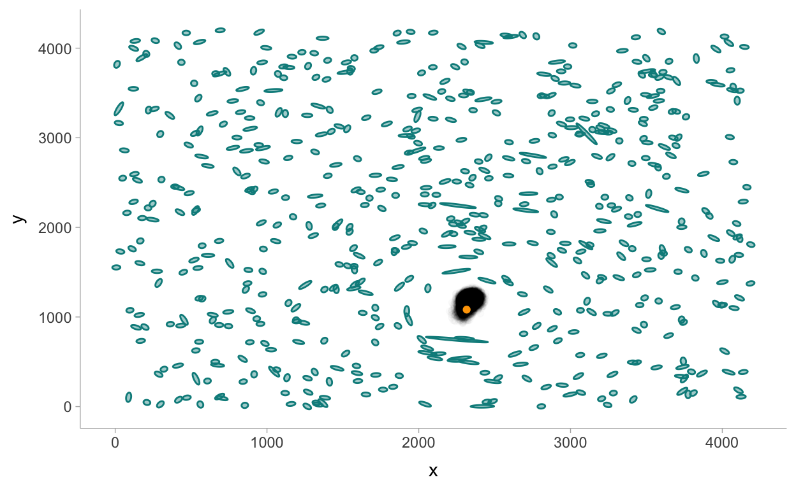
A closer look at the true location parameters:
true_loc <- read_csv("data/Training_halos.csv") %>%
filter(SkyId == "Sky3") %>%
rename(`1` = halo_x1, `2` = halo_y1) %>%
select(`1`, `2`) %>%
pivot_longer(`1`:`2`, names_to = "coord") %>%
mutate(coord = as.integer(coord))
fit4 %>%
spread_draws(halo_position[coord]) %>%
left_join(true_loc) %>%
ggplot() +
stat_histinterval(aes(x = halo_position), show_interval = FALSE, breaks = 40) +
geom_vline(aes(xintercept = value), linetype = "dashed") +
facet_wrap(~ coord, ncol = 1, scales = "free")
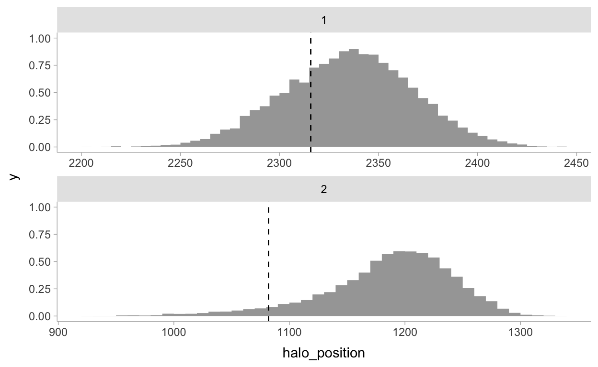